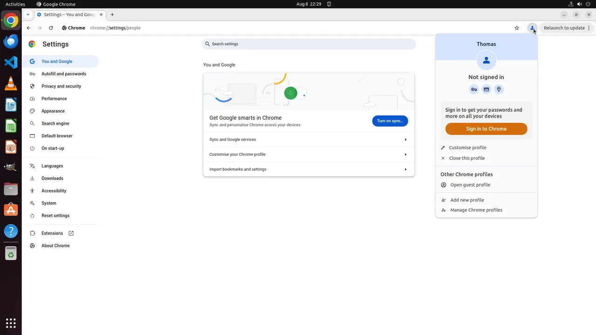
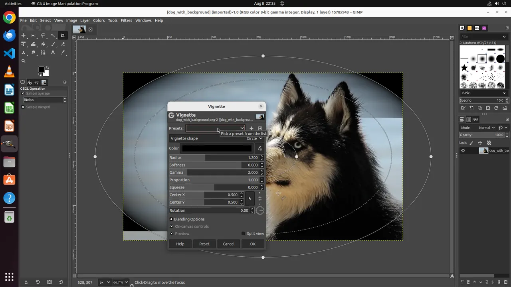
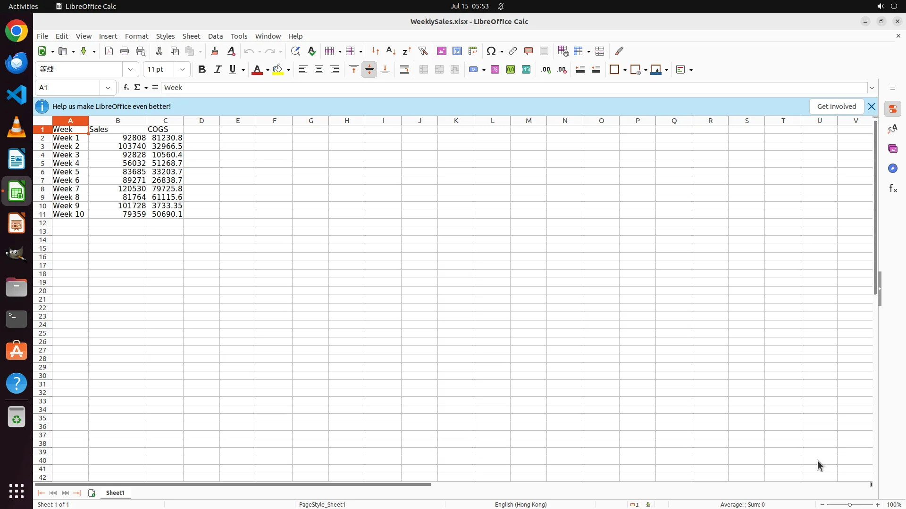

Self-evolve · GUI + Coding
A self-evolving
computer-use agent
system.
Planner decides the next thought, GUI action, or delegated code task. Grounder turns visual intent into precise interaction. Coder executes bounded work inside the disposable guest. ARM verifies the resulting desktop state and sends evidence-backed feedback into the next episode.

Chrome · task state verified
GIMP · ARM checkpoint01 TL;DR
Self-evolution turns one run into a checked feedback loop.
Instead of spending the entire inference budget on independent candidates, ARM checks what actually happened on the desktop and makes the next episode better informed.
Bounded episodes
The Actor works for a fixed number of steps, then yields control for verification.
Evidence-backed checks
ARM evaluates a task checklist against the current GUI and recorded trajectory.
Feedback that changes action
Failed checks become context for the next episode. Success or infeasible ends the loop.
REAL OSWORLD IMPROVEMENT CASE
Actions move forward.
Actions move forward.
Evidence loops back.
The Actor adds the requested Profit formulas and stops because the GUI looks correct. ARM checks the saved workbook, catches the missing save, and returns one concrete instruction: save before finishing.
EPISODE 01NOT SAVED→EPISODE 02SUCCESS

TASK
Add a Profit column and calculate Sales − COGS.
The workbook starts without the requested result.
02 Project experiments
Measured across models, environments, and inference budgets.
Every value below comes from the project Q2 experiment summary. These results are not claims about a live official leaderboard.
OSWORLD 1.0
Success rate · CUATwo Actor families ↗
View source values
WINDOWS AGENT ARENA
Success rate · 152 tasksSelf-Evolve results ↗
View source values
GUI becomes stronger with code.
WIDE SCALING
Near-BoN performance at roughly one-third the rollouts.
Sequential feedback spends compute after seeing the real outcome, rather than before it.
≈470ARM rollouts
73.7% success
73.7% success
BaselineARMWide · BoN≈5
View chart data and rounding note
The source contains minor annotations such as 469/73.8 and 495/73.7. This page uses the rounded comparison ≈470/73.7.
ARM DIAGNOSTICS
High recall, with false positives explaining much of the remaining gap.
03 Scalable rollout infrastructure
One control plane.
Disposable workers at scale.
GADE CUA Evolve separates orchestration, model inference, and desktop execution. Batch shards can scale horizontally across runner hosts while each OSWorld task receives an isolated Ubuntu VM, trajectory recorder, and guaranteed cleanup path.
PRIVATE ROLLOUT TOPOLOGYone control plane · N isolated workers · centralized egress
CONTROL PLANEScheduler + GADE runnersshards · retries · cleanup
INFERENCEModel endpointPlanner · Grounder · Coder · ARM
private control
VOLCENGINE VPCprivate subnets · security-group isolation
SHARED EGRESSSquid gatewayallowlisted HTTP(S) · one controlled public path
ARTIFACTSTOS / resultsscreenshots · JSONL · training trajectories
TCP 5000 + 9222 from runner SG only
WORKER 01OSWorld VMno EIP · disposable
WORKER 02OSWorld VMno EIP · disposable
WORKER NHorizontal scaleone isolated task per VM
One controlled exit,
not one EIP per worker.
Workers stay on private addresses. Required HTTP(S) traffic crosses a hardened Squid gateway with source ACLs, destination policy, logs, and rate limits.
Squid is egress only; runners reach TCP 5000/9222 directly over the VPC.Shard the queue.
Keep tasks isolated.
External schedulers distribute deterministic batch shards across runner hosts. Each task receives one disposable VM and an independent cleanup boundary.
Capacity follows the lowest ECS, subnet, model-QPS, proxy, and budget quota.Build, verify,
sanitize, then scale.
The guide pins the OSWorld checkout and Ubuntu image, verifies checksums, provisions Coder dependencies, and documents both deployment topologies.
Read the hosted infra guide View Markdown sourceOperator deployment pattern. The pinned OSWorld dependency remains unmodified; private-address lifecycle and proxy policy belong to the infrastructure layer.
04 GUI Trajectory Lab
Watch the agent act—and ARM decide.
Two real improvement cases from the attached runs: Ubuntu cases are labeled OSWorld; Windows cases are labeled Windows Agent Arena. In both, ARM catches a plausible-looking failure and changes the next episode.
Screenshot unavailable. Choose another step to retry.
OSWORLD · UBUNTU · CALCSTEP 01 / 06